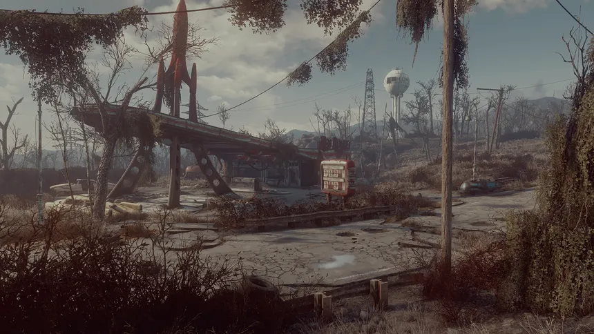

A Fallout 4 az egyetlen Fallout játék (legalábbis 2026. 11. 13.-áig), ami az atomháború (Great War) előtt kezdődik. A játékos betekinthet a háború előtti életbe körülbelül 10-15 percig mielőtt ledobnák a Kínaiak az atombombáikat a Bostoni területre. Miután felszólalnak a bombariadók, a játékos karaktere belép a Vault 111-be. Ez egy atomcsapásoktól védő bunker, melyben krio-fagyasztó kapszulákban (nagyon hideg gázokkal teli kamra) tartósítják a háború előtti túlélőket, hogy az atomcsapások után visszatérhessenek a felszínre. Miután lefagyasztják a játékost, egy bizonyos idő múlva megnyitják az előtte lévő kapszulát, melyben a felesége van, őt lelövik, majd ellopják a játékos gyermekét, melynek Shaun a neve. Ezután újra aktiválódik a játékos kapszulája, majd egy rövidebb idő után megint felkel. Ezután az Egyedüli Túlélő néven ismert karaktere a játékosnak (Sole Survivor - mivel lelövik a feleségét, ellopják a gyerekét és rajta kívül mindenki halott a bunkerben) elhagyja a bunkert, majd a felszínre megy.
 Mr. Handy, Codsworth néven.")


Miután a játékos kijut Vault 111-ből, egyből észreveheti, hogy a világ sokat változott a csapások után. A fű már nem zöld, a fákból sokkal kevesebb van, valamint nem hallja a madarakat sem, kivéve egypár mutált hollót a bejárat mellet, amelyek nem is biztos, hogy hollók. A játékos ezután visszatér az otthonához Sanctuary-ben, ahol megtalálja a régi, háború előtti robotját, egy Mr. Handy-t Codsworth néven, aki még mindig próbálja rendben tartani a házat. Az ezután következő interakcióban a robottal megtudjuk, hogy a hábotú óta már több, mint 200 év telt el. Ezután a robot azt javasolja, hogy a gyerekünk után próbáljunk Concord-ban keresni. Félúton Concord felé a játékos találkozhat egy kutyával (Dogmeat a neve), ami nem volt kitéve súlyos radioaktív sugárzásnak, így nem ellenséges egyből. Ezt a kutyát a játékos magánál tarthatja társként. Concord-ba érve, a játékos találkozik egy tűzharccal a helyi fosztogató banda és egy csoport túlélő közt. Ebben a játékban már nem olyan szabadok a történetbeli választások, mint New Vegas-ban, így a játékosnak muszály segítenie a túlélőknek. Miután a játékos likvidálja a helyi ellenfeleket, valamint még egy Deathclaw-t is, a túlélők bemutatják magukat és kiderül, hogy ők a Minutemen csoport maradéka, miután súlyos veszeségeket szenvedtek (erről még több lesz a 2. fejezetben).

Az egyik Minutemen-es egy súlyos kábítószerek által okozott látomás miatt azt gondolja, hogy a játékos fia a Boston maradványainak területének legfontosabb településében, Diamond Cityben lesz, ezért a játékos elkezdi az útját a város felé. Amikor a játékos a bejárathoz ér, találkozik ott egy újságíróval, akit kizártak a városból hamis hírek terjesztésének a vádjával, Piper Wright-tal. Miután meggyőzi a játékos és Piper, hogy egy fontos kereskedő van a kapunál, az őrök visszaengedik Piper-t, valamint beengedik a játékost is. Ezután Piper azt javasolja a játékosnak, hogy egy helyi detektív, Nick Valentine segítségével keresse tovább a gyermekét. Miután a játékos a Valentine Detective Agency irodájába lép, arról értesül, hogy a detektívet elrabolta egy helyi banda és egy másik helyi Vaultban tartja, ezért a játékosnak meg kell mentenie. Mikor a játékos megtalálja Valentine detektívet, kiderül (legalábbis a játékos számára), hogy ő egy második generációs synth (szintetikus ember). Miután a játékos megmenti őt, Valentine detektív segít neki megtalálni a felesége gyilkosát és a gyermeke elrablóját. Kiderül, hogy a célpontod Hagen Erődnél (Fort Hagen) van. Itt a játékosnak sok első generációs szintetikus emberen keresztül kell harcolnia, mielőtt találkozik a keresettel, Conrad Kelloggal. Itt a játékos dönthet, hogy megöli-e vagy sem. Én mindig megölöm ahogy meglátom, úgyhogy nem tudom, hogy mi a kimenetele a békés útnak. Ezután az is kiderül, hogy hogyan tudsz eljutni a gyerekedhez, aki egy titkos föld alatti építményben van. Ennek az épületnek az eléréséhez viszont kell építened egy készüléket, amelyet csak az egyik fő csoport segítségével tudsz megépíteni. Hasonlóan New Vegashoz, a második fejezet itt is erről fog szólni.